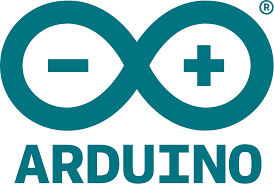

Plataforma Arduino IDE
Plataforma Arduino IDE

Arduino IDE (Entorno de Desarrollo Integrado, por sus siglas en inglés) es una plataforma de software libre que permite programar placas electrónicas de la familia Arduino de manera sencilla y accesible. Este entorno está diseñado para facilitar el desarrollo de proyectos tecnológicos, especialmente en el ámbito educativo, la robótica y la automatización.
El lenguaje utilizado en Arduino IDE está basado en C/C++, y su interfaz es intuitiva, lo que permite a estudiantes y desarrolladores escribir, compilar y cargar programas –también conocidos como sketches– directamente en la placa Arduino. Entre sus herramientas más destacadas se encuentran el verificador de código, el cargador al dispositivo, el monitor serial para comunicación en tiempo real, y un gestor de bibliotecas que amplía las funcionalidades del sistema.
Arduino IDE es ampliamente utilizado para proyectos que involucran sensores, actuadores, motores, luces, pantallas y otros componentes electrónicos, fomentando el aprendizaje de la programación y el pensamiento lógico mediante la experimentación práctica.
Tinkercad
Tinkercad

Tinkercad es una plataforma en línea gratuita desarrollada por Autodesk, que permite diseñar modelos 3D, crear circuitos electrónicos y programar mediante bloques o código. Su entorno intuitivo y amigable está pensado para estudiantes, principiantes y personas interesadas en aprender sobre diseño digital, electrónica y programación de manera práctica y creativa.
En el ámbito del diseño 3D, Tinkercad permite a los usuarios modelar objetos tridimensionales que pueden ser impresos en impresoras 3D. En su área de circuitos, se pueden simular conexiones electrónicas con componentes como LEDs, sensores, motores, pantallas LCD, y placas como Arduino. Además, incorpora una función de programación por bloques basada en Scratch y otra en lenguaje textual compatible con Arduino.
Gracias a su facilidad de uso y acceso desde cualquier navegador web, Tinkercad se ha convertido en una herramienta educativa ampliamente utilizada para enseñar principios básicos de electrónica, pensamiento computacional, diseño y robótica.
mBlock
mBlock
mBlock es una plataforma de programación educativa basada en bloques desarrollada por la empresa Makeblock. Está diseñada para enseñar a niños y jóvenes los conceptos de programación, robótica y pensamiento computacional de forma visual, interactiva y accesible.
Su interfaz se basa en Scratch 3.0, lo que permite a los usuarios programar arrastrando y soltando bloques de código. Además, mBlock también permite cambiar al modo texto en lenguaje Python, lo que facilita la transición a lenguajes de programación más avanzados.
mBlock es compatible con diversos dispositivos y kits de robótica, como mBot, Ranger, Codey Rocky y también con placas Arduino, lo que permite controlar sensores, motores, luces y otros actuadores físicos. Además, incluye funciones para programación de inteligencia artificial, Internet de las Cosas (IoT), y simulación de proyectos.
Gracias a su diseño educativo, mBlock se ha convertido en una herramienta clave en el aprendizaje STEAM (Ciencia, Tecnología, Ingeniería, Arte y Matemáticas), fomentando la creatividad, la resolución de problemas y el trabajo por proyectos.